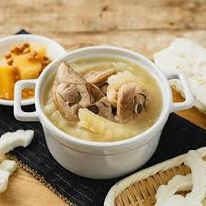

班級:餐三乙 姓名:蔡子毅 學號:91034210
料理陳列展示
苦瓜雞湯
材料：
- 1 隻新鮮苦瓜
- 300 克雞肉
<
- 1 個玉米
- 1 片薑
<
- 適量的鹽和胡椒調味
製作方法：
<
<
- 將苦瓜切片，雞肉切塊，玉米切段，薑切片。
- 將切好的材料放入鍋中。
- 加入適量的水，煮沸後撇去浮沫。
<
- 轉小火，繼續煮約1小時，直到雞肉熟爛。
- 最後加入適量的鹽和胡椒調味即可。

典故
本道菜食材屬夏季中時令水果和蔬菜，市場上易買且易做。營養價值極高。
可以説是夏季常食的一道特色菜，清熱袪火，又有減肥作用，
在夏季這個易長痘痘的季節，用化學美容產品，不如選用食療的方法。
也許很多朋友不喜歡苦瓜，是因為其中的苦。本道菜中，苦瓜與雞肉和菠蘿一同煮後，
菠蘿中的甜味中合了苦瓜中的苦味。